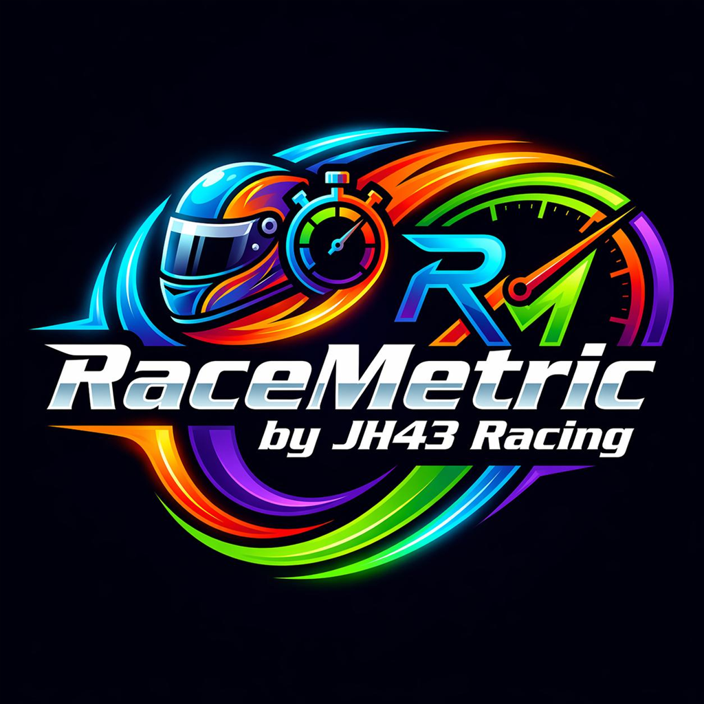
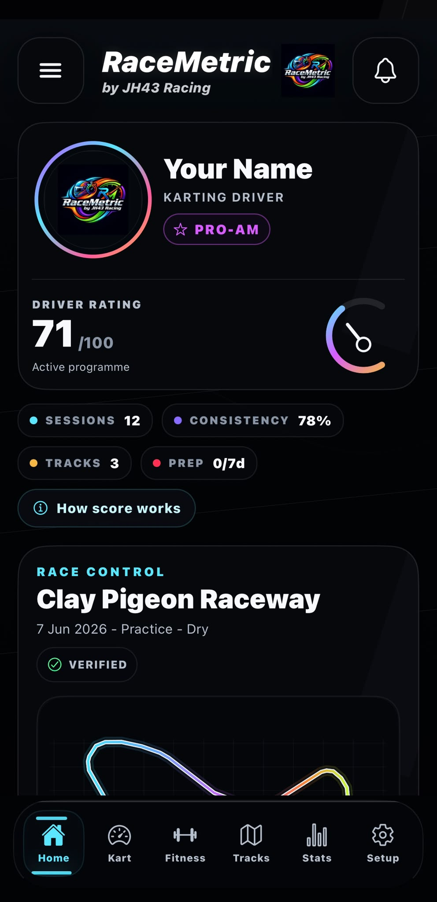
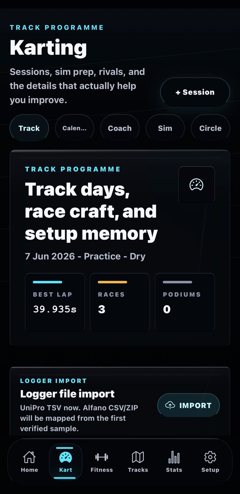
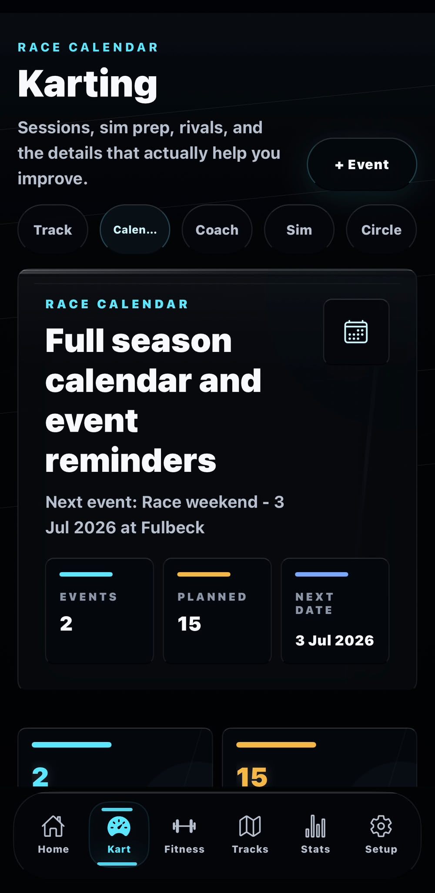
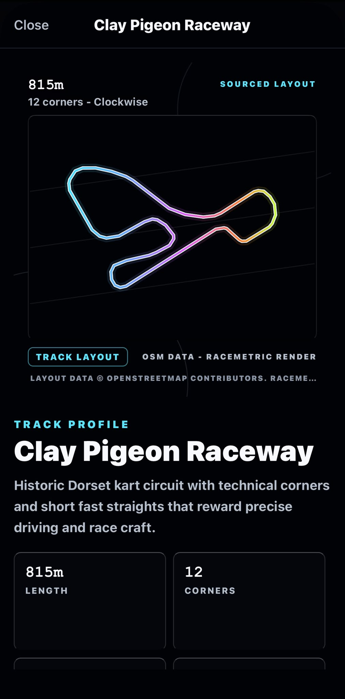
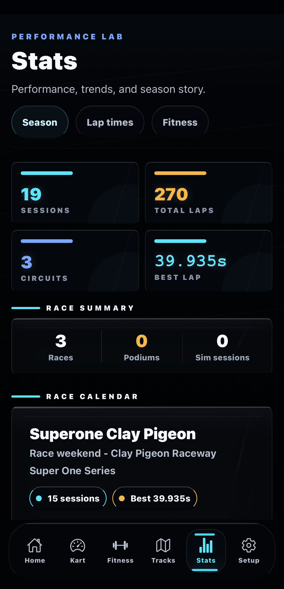
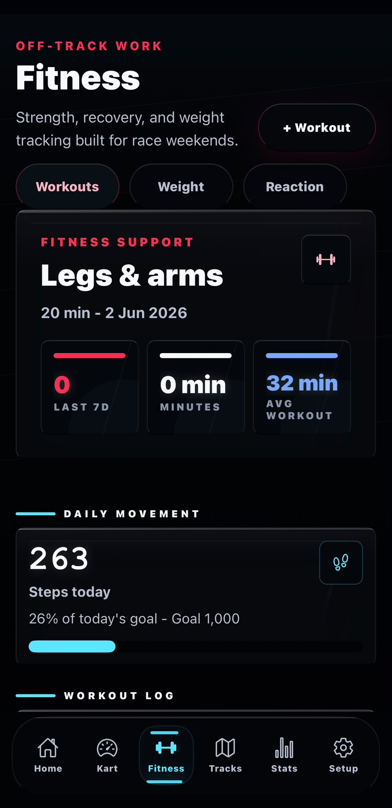

Session records
Log circuits, lap times, conditions, kart class, tyres, pressures, setup notes, and race results.

RaceMetricKarting logbook and race prep
A focused driver app for kart sessions, race weekends, circuit notes, logger imports, fitness work, and season progress.
Created by JH43 Racing.

Built for karting
Log circuits, lap times, conditions, kart class, tyres, pressures, setup notes, and race results.
Keep planned sessions, reminders, event notes, and checklists together before you arrive.
Use circuit guides, saved locations, track records, and personal session history in one place.
RaceMetric works without an account and stores your app data on your device.
App preview





Public reference data
RaceMetric can download a read-only public track-record feed hosted on GitHub. It does not upload user-created sessions, logger files, photos, profile data, fitness data, or location data.